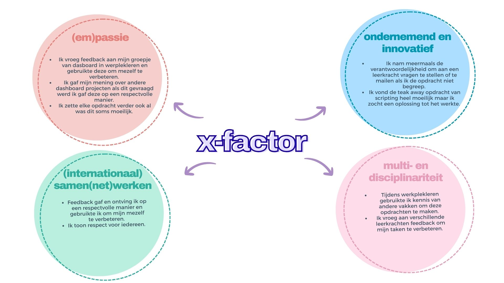

Situering binnen Profiel DVO
ROL 1: CREATIEVE VORMGEVER
Ik vind dat ik als creatieve vormgever de wensen van een klant goed begrijp en kan omzetten in een digitaal ontwerp. In het laatste jaar van het middelbaar werkte ik mee in de leeronderneming Poppub, waar ik veel leerde over klantgericht werken. Ik heb in het visueel ontwerpen een basiskennis van HTML en CSS. JavaScript en digitale animaties zijn nog een werkpunt, maar hieraan wil ik verder werken.
ROL 2: FRONT-END ONTWIKKELAAR
Ik kan teksten, afbeeldingen en data verwerken en tonen in een online toepassing. Het aanpassen van een website aan verschillende schermen vind ik soms nog moeilijk. Ik werk volgens een planning, maar dit verloopt niet altijd even vlot waardoor sommige taken kunnen uitlopen.
ROL 3: COMMUNICATOR / TEAMSPELER
Ik hou mij aan de werking en afspraken binnen een bedrijf. Ik communiceer de nodige informatie met mijn team. Mijn Engels is voldoende maar nog niet heel goed. Ik werk samen met anderen en neem deel aan overlegmomenten.
ROL 4: LEVENSLANG LERENDE
Ik leer graag bij en probeer veel nieuwe dingen.
EINDREFLECTIE WERKPLEKLEREN 1
Tijdens werkplekleren 1 hebben we van alles gedaan: we hebben een dashboard en een portfolio gemaakt, veel zelfreflectie gedaan en naar verschillende sprekers geluisterd. Ik vond werkplekleren leuk omdat dit het eerste vak was waar je je eigen inbreng en creativiteit mocht gebruiken. Ondertussen is dit ook bij andere vakken.
Tijdens werkplekleren was ik heel blij dat we een dashboard mochten maken. Dit was 1 van de eerste creatieve opdrachten die we kregen. Daarnaast vond ik de sprekers interessant omdat zij ons verschillende inzichten gaven over het werk later. Ook leerden we meer over onszelf.
Ik vond het soms wel moeilijk dat de opdrachten zo groot waren. Als iets dan langer duurde dan verwacht, had ik soms een tijdsprobleem omdat er veel onderdelen aan een opdracht gekoppeld zijn.
Ik heb ontdekt hoe belangrijk plannen is en wil hier in de toekomst meer op inzetten. De meest waardevolle les vond ik die van de sprekers, omdat je hier meer inzicht kreeg over je werk later en wat er van ons verwacht wordt.
Ik ben trots dat ik deze portfolio heb gemaakt en dat ik veel van de code zelf heb geschreven. Het heeft veel indruk gemaakt dat ik dit kon. Naar mijn mening is het mooi en goed gelukt.
